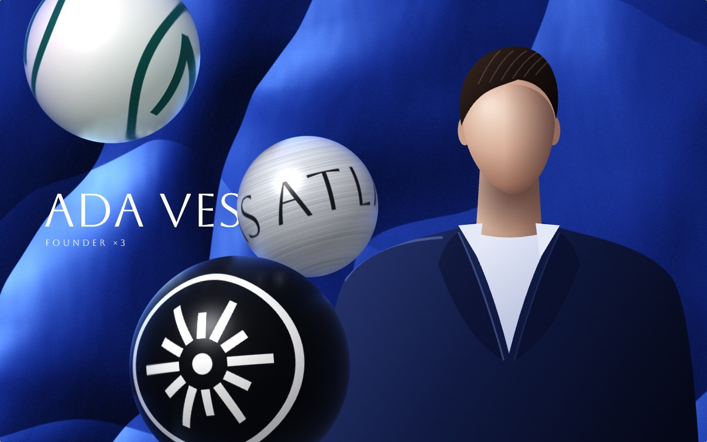
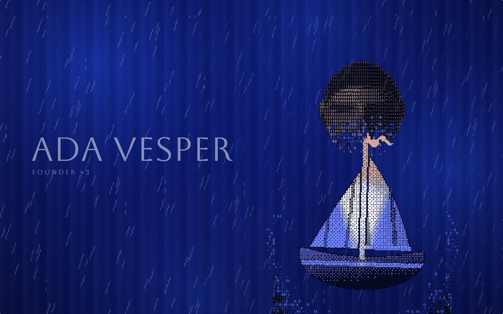
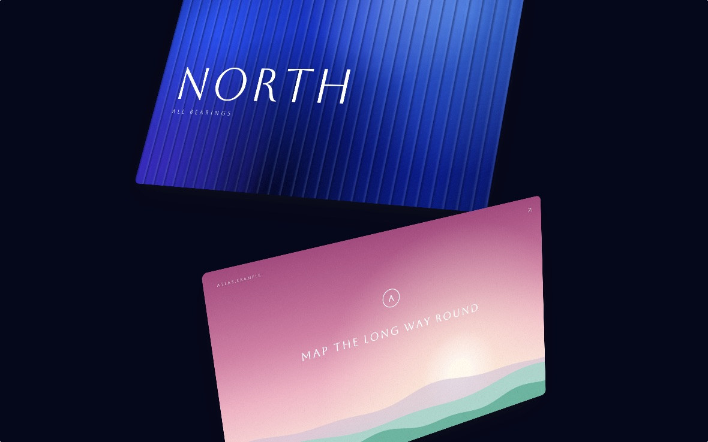
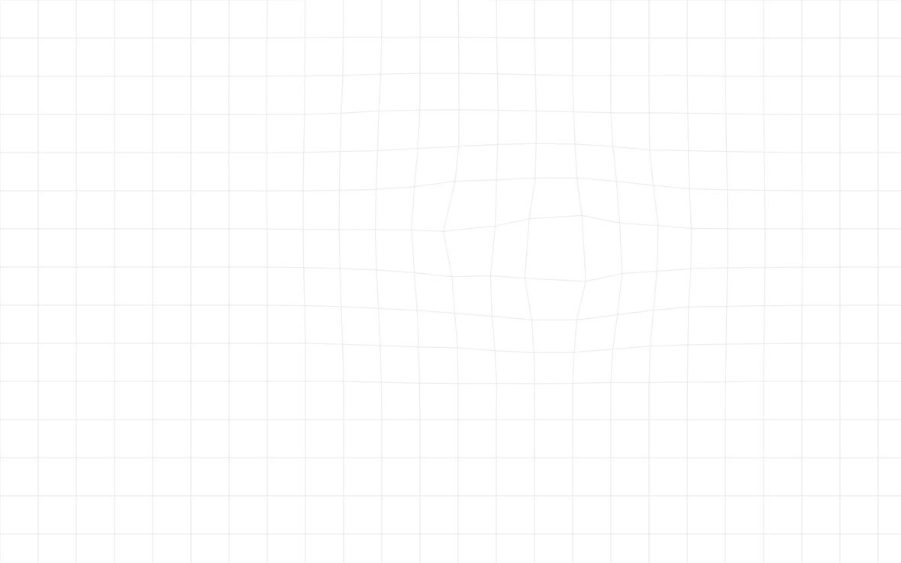

Open source, MIT
Animations cut from jjmartin.co, free to reuse.
Pieces JJ designed for his site and then cut, in October 2026: most from the home page, and the grid that sat behind the rest of it. Each is a small module in plain JavaScript, shown here on stand-in pictures made in code. Take what is useful.
A few marks cross a hero picture while a figure stands in it.
Spheres · Coins · Orbit · Deck · Index

A picture turns to type, and the type to a sprite that plays on in the rain.
Erosion · Rain · Retype · Four palettes

Five ways to move between full-screen cards on one scroll.
Helix · Calm · Ribbon · Crate · Sheets

A hairline grid that bulges under the pointer and under three slow swells.
Grid · Page background
